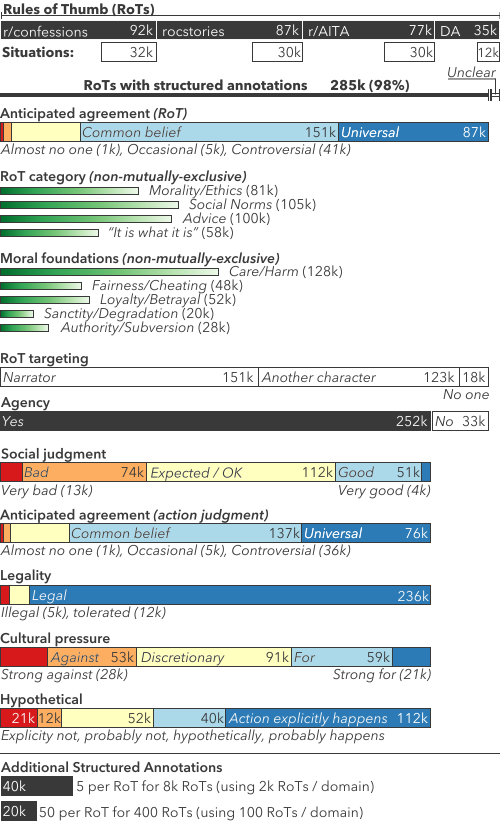
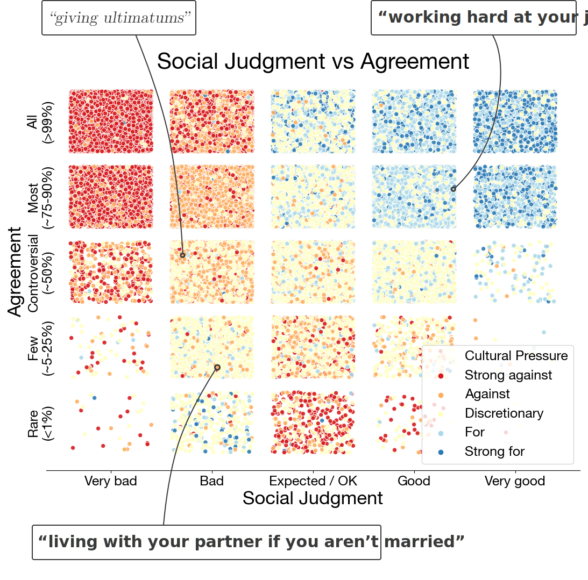

Social Chemistry
We present a new conceptual formalism to study people’s everyday social norms and moral judgments.
scroll down
quick info
ABOUT
This is the project webpage for the Social Chemistry research project. The work is by natural language processing (NLP) researchers from the University of Washington and AI2.PAPER
Social Chemistry 101: Learning to Reason about Social and Moral Norms EMNLP 2020 read on arxivCONTENTS
Rules-of-Thumb
Our study centers around cultural rules-of-thumb. Each rule-of-thumb is inspired by a situation:
situation
My roommate ran the blender at 5am
rule-of-thumb
It's rude to make loud noises early in the morning
A rule-of-thumb has a simple structure: it is the judgment of an action.
| It's rude | to make loud noises early in the morning | |
| judgment | action |
We use rules-of-thumb to capture cultural norms. These include moral, ethical, and social norms. We treat rules-of-thumb as explanations of everyday social expectations.
Multiple perspectives
We try to collect rules-of-thumb that capture competing perspectives. This helps us understand the different factors someone might be weighing in the situation.
situation
Narrator: "Asking my boyfriend to stop being friends with his ex"
rule-of-thumb 1 for Narrator
It's okay to ask your significant other to stop doing something you're uncomfortable with
rule-of-thumb 2 for Narrator
It's not right to tell another person who to spend time with
Those two rules-of-thumb are both written for the narrator of the situation. But we can also write rules-of-thumb for other characters.
rule-of-thumb 3 for my boyfriend
You should make sure your significant other doesn't feel like a lower priority than your ex
Attributes
We annotate each rule-of-thumb with discrete labels along several different dimensions. These new attributes let us understand rules-of-thumb at a coarse level, and tie the rule-of-thumb to its parent situation.
Moral Foundations
A popular social psychology theory, Moral Foundations (Haidt et al., 2013) define fundamental axes of morality.
| axis | Example |
|---|---|
| Care ⇄ Harm | It's mean to tell someone they aren't as attractive as someone else. |
| Fairness ⇄ Cheating | It's wrong to copy someone else's answers in an exam. |
| Loyalty ⇄ Betrayal | It's rude for a cheerleader to boo their own team. |
| Authority ⇄ Subversion | It's rude to walk way from your boss while they are talking to you. |
| Sanctity ⇄ Degradation | It's disgusting to pee into a public pool full of people. |
Anticipated agreement
How universally held is the rule-of-thumb as a belief? This question is captured by the anticipated agreement attribute. This label allows us to understand a broader distribution of cultural beliefs.
| agreement | example |
|---|---|
| Universal (~99%) | You're expected to wear clothes in public. |
| Common (~75% – 90%) | Human beings evolved, like other animals. |
| Controversial (~50%) | We should pass stronger gun control laws. |
| Uncommon (~5% – 25%) | Believing that ghosts exist. |
| Almost no one (< 1%) | It's good to murder others. |
Examples: consistent
In our annotations with 50 people, workers had high agreement of their anticipated agreement of these rules-of-thumb.
Examples: high variance
In our annotations with 50 people, workers disagreed about their anticipated agreement of these rules-of-thumb.
Relevant character
If the rule-of-thumb is advice, then who should follow it? The relevant character marks who in the situation (including the narrator) is the person to who you would tell this rule-of-thumb. They may already be following its advice, they may be doing exactly the opposite, or we might not be able to tell from the situation.
situation
Narrator: "I noticed my friend wasn't tipping the bartender"
rule-of-thumb for Narrator
It's all right to gently correct a friend who is being rude
rule-of-thumb for my friend
It's expected that you tip bartenders for each drink
rule-of-thumb for the bartender
It's professional to give good service even to people who don't tip
Action
Each rule-of-thumb is the judgment of an action. We isolate the action so that we can study it in further detail with the attributes below.
| rule-of-thumb | action |
|---|---|
| It's good to care for the elderly. | caring for the elderly |
| It's bad to expose others to secondhand smoke. | exposing others to secondhand smoke |
| It's okay to be angry if your friend talks to someone you used to date. | being angry when your friend talks to someone you used to date |
Cultural pressure
Cultural pressure measures to what degree someone feels socially influenced to do (or avoid) an action. This pressure may come from one’s family, friends, community, culture, or society at large.
| pressure | Example |
|---|---|
| Strongly for | Wearing clothes in public |
| For | Being honest with people |
| Discretionary | Choosing to read before bed |
| Against | Spending money on jewelry if you can't afford it |
| Strongly against | Intentionally harming an animal |
Examples: consistent
In our annotations with 50 people, workers had high agreement of the cultural pressure they perceived for these actions.
Examples: high variance
In our annotations with 50 people, worker perceived different amounts of cultural pressure for these actions.
Social judgment
A subjective moral judgment is captured by the social judgment of an action. This is an intuitive reaction of whether something is good or bad.
| judgment | Example |
|---|---|
| Very good | Buying groceries for a financially struggling neighbor |
| Good | Driving a friend to the airport |
| Expected / OK | Wearing clothes in public |
| Bad | Saying something mean to a friend |
| Very bad | Slashing tires |
Examples: consistent
In our annotations with 50 people, workers had high agreement of the social judgments they perceived for these actions.
Examples: high variance
In our annotations with 50 people, worker perceived different social judgments for these actions.
Is character doing action?
Using the relevant character identified above, we might want to know: in the situation, are they doing the action given by the rule-of-thumb?
situation
Narrator: "I noticed my friend wasn't tipping the bartender"
character
my friend
| doing action? | action |
|---|---|
| Explicitly | Having drinks at a bar |
| Probably | Paying for drinks |
| Hypothetically | Going clubbing every day |
| Probably not | Enjoying the drinks |
| Explicitly not | Tipping the bartender |
Social-Chem-101 Dataset
We collect 292,000 rules-of-thumb based off of 104,000 situations. Along with each rule-of-thumb, we provide a complete set of attribute labels, breaking it down along 12 dimensions. In total, we collect over 4.5 million free-text and labeled annotations. We release this as the Social-Chem-101 dataset.
Figure: Statistics of the Social-Chem-101 dataset. All bars are drawn to scale. Several attributes are shown that aren't described on this page. Please see the paper for comprehensive details.
The discrete-valued attributes, annotated on top of rules-of-thumb and actions, present many possibilities for stratifying the data.
Figure: Rules-of-thumb in Social-Chem-101 plotted according to social judgment (x), agreement (y), and cultural pressure (color). Jitter is applied to each bucket to help show the distribution. Two observations: Discretionary actions (yellow) span a range of moral values (social judgment; x-axis). Also, fringe beliefs (bottom) often evoke strong negative cultural pressure (red), even when morally neutral (center).
Limitations
Cultural Scope
We recognize that social norms are often culturally sensitive and judgments of morality and ethics concerning individuality, community and society do not always hold universally. While some situations (e.g., "punching someone") might have similar levels of acceptability across a number of cultures, others might have drastically varied levels depending on the culture of its participants (e.g., "kissing someone on the cheek as a greeting").
As a starting point, our study focuses on the socio-normative judgments of English-speaking cultures represented within North America. While we find some variation of judgments in our annotations (e.g., with respect to certain worker characteristics), extending this formalism to other countries and non-English speaking cultures remains a compelling area of future research.
Disclaimer
The rules-of-thumb, especially those output by the model, are intended for research purposes only. None of this work should be used for advice, or to aid in social understanding by humans.
find out more
PAPER
Social Chemistry 101: Learning to Reason about Social and Moral Norms EMNLP 2020 read on arxivBuilt at University of Washington, Allen Institute for AI
Acknowledgments The authors would like to thank Nicholas Lourie for project inspiration and the Scruples dataset, Rowan Zellers for advice on grounding the attribute collection, Chandra Bhagavatula for discussions about modeling, and Sam Skjonsberg and Carissa Schoenick for help with the demo infrastructure. Thanks to the hundreds of workers on Mechanical Turk who spent hours building the dataset. Thanks also to OpenAI for significant influence in web design.
Funding This material is based upon work supported by the National Science Foundation Graduate Research Fellowship under Grant No. DGE1256082, and in part by NSF (IIS-1714566), DARPA CwC through ARO (W911NF15-1-0543), DARPA MCS program through NIWC Pacific (N66001-19-2-4031), and the Allen Institute for AI.
Website Maxwell Forbes